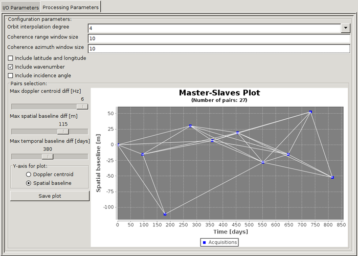

Multi-Reference InSAR Operator
Given a coregistered stack product, this operator allows for computing the interferometric phase as well as
estimating the interferometric coherence for arbitrary image pairs. Optionally, it can generate the following bands:
incidence angle, latitude, and longitude.
Input
- The input to this operator should be a coregistered stack product. In the case of TOPS mode, the input
product should have been previously deburst using the TOPSAR-Deburst operator.
- Elevation band (required). The operator removes the reference/topographic phase from every
interferogram, which requires an elevation band (a band whose name is prefixed by "elevation"). By default
the Add elevation band option is enabled, so when the stack does not already contain one the operator
adds it automatically from the selected DEM — there is no need to run the Add Elevation Band operator
first. If you disable that option and no elevation band is present, the operator reports an error.
Note on topographic phase removal. Unlike the Interferogram Formation operator, this
operator does not expose a separate "subtract topographic phase" parameter. Reference and topographic phase
removal is intrinsic — it is always performed from the elevation band — which is why the elevation
band is mandatory.
Output
- The output of the operator is a product with the following bands:
Bands per interferometric pair (with date pairs of the form "[ddMMMYYYY]_[ddMMMYYYY]"):
-
i_ifg_[ddMMMYYYY]_[ddMMMYYYY]: I band for interferogram.
-
q_ifg_[ddMMMYYYY]_[ddMMMYYYY]: Q band for interferogram.
-
Intensity_ifg_[ddMMMYYYY]_[ddMMMYYYY]: virtual band for interferometric intensity (I^2 + Q^2).
-
Phase_ifg_[ddMMMYYYY]_[ddMMMYYYY]: virtual band for interferometric phase (atan2(Q, I)).
-
coh_ifg_[ddMMMYYYY]_[ddMMMYYYY]: interferometric coherence.
Bands created per secondary image (with secondary number "[SECONDARY_NUMBER]"):
-
wavenumber_sec[SECONDARY_NUMBER]_[ddMMMYYYY]: vertical wavenumber based on elevation band (unit: radians / meter).
Other bands:
-
elevation*: elevation band; same as input elevation band (unit: meters).
-
incidenceAngle: local incidence angle based on elevation band (unit: degrees).
-
lat: latitude based on elevation band (unit: degrees).
-
lon: longitude based on elevation band (unit: degrees).
Parameters

Configuration parameters
- Orbit interpolation degree: has no effect. Between two state vectors the orbit is interpolated with a local 8-point Lagrange polynomial through the nearest vectors, and velocities are its derivative. The parameter is kept so that existing graphs still load.
- Coherence range window size: number of pixels for coherence estimation.
- Coherence azimuth window size: number of lines for coherence estimation.
- Include latitude and longitude: if True, the corresponding bands will be created.
- Include wavenumber: if True, the corresponding band will be created.
- Include incidence angle: if True, the corresponding band will be created.
- Add elevation band: if True (default), an elevation band is added automatically from the selected DEM
when the input stack does not already contain one. Required for reference/topographic phase removal.
- Digital Elevation Model: the DEM used when an elevation band is added automatically.
- DEM Resampling Method: resampling method used when reading the DEM.
Pair selection
- Max doppler centroid diff: maximum allowed absolute doppler centroid difference between image pairs (unit: Hz).
- Max spatial baseline diff: maximum allowed absolute spatial baseline difference between images pairs (unit: meters).
- Max temporal baseline diff: maximum allowed absolute temporal baseline difference between images pairs (unit: days).
Using GPT
If you are using GPT, the pair selection is done through the pairs parameter. This allows for explicitly listing the pairs, which provides more flexibility than the UI sliders.
For example, pairs could be set to: 06Jan2018-12Apr2018,06Jan2018-09Oct2018,06Jan2018-01Jan2019.
If pairs is empty, the operator forms the sequential network: each date paired with the next one.
It is recommended to use the Graph Builder for quickly generating the pairs (by using the sliders) and subsequently saving the processing graph. The graph file can then be edited (optionally) and executed from the command line.
References
- Berardino, P., Fornaro, G., Lanari, R., Sansosti, E. (2002). A new algorithm for surface deformation monitoring based on small baseline differential SAR interferograms. IEEE Transactions on Geoscience and Remote Sensing, 40(11), 2375–2383. doi:10.1109/TGRS.2002.803792
Processing parameters (reference)
GPT operator: MultiMasterInSAR. Generated from the operator source; parameter names are those used in GPT and graph XML.
| Parameter | Type | Default | Allowed values | Unit | Description |
|---|
orbitDegree | int | 4 | 1, 2, 3, 4, 5 | | Has no effect. The orbit is interpolated between state vectors with a local 8-point Lagrange polynomial; the parameter is kept so that existing graphs still load. |
pairs | String[] | | | | List of interferometric pairs |
includeWavenumber | boolean | true | | | Include wavenumber |
includeIncidenceAngle | boolean | true | | | Include incidence angle |
includeLatLon | boolean | true | | | Include latitude and longitude |
cohWindowAz | int | 10 | | | Size of coherence estimation window in azimuth |
cohWindowRg | int | 10 | | | Size of coherence estimation window in range |
addElevation | boolean | true | | | Add an elevation band (from a DEM) automatically when the input stack does not already contain one. The elevation band is required to remove the reference/topographic phase, so the operator cannot run without it. Leave this on to avoid having to run the Add Elevation Band operator beforehand. |
demName | String | Copernicus 30m Global DEM | | | The digital elevation model used when 'Add elevation band' adds a missing band. |
demResamplingMethod | String | BILINEAR_INTERPOLATION | | | Resampling method used when reading the DEM. |
Background
Prerequisites
Next step